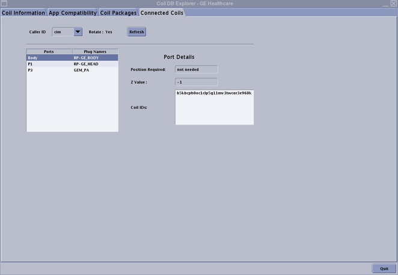
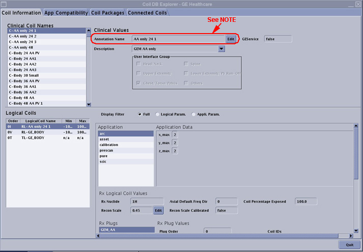
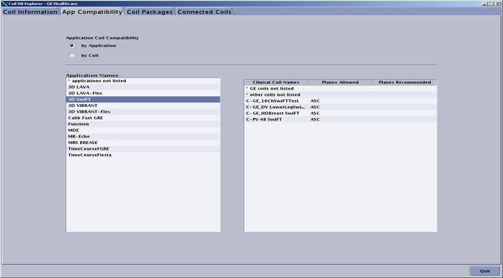
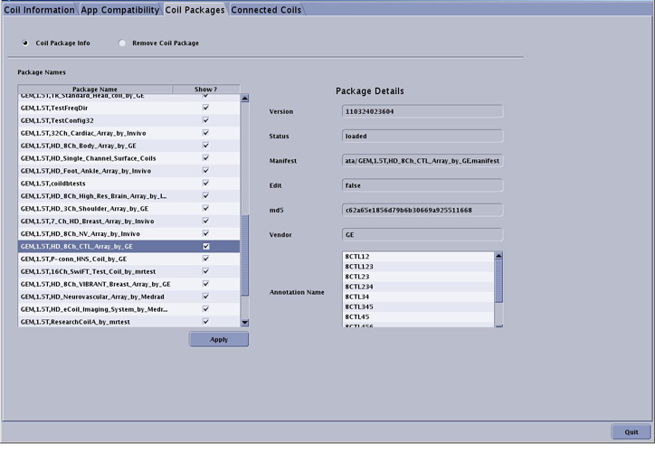

Operating Documentation
Direction 5670006, Rev# 1
Discovery MR750w GEM Service Methods
Module Version 3.0, Version Date 7/25/11
Operating Documentation |
This procedure requires 1 person and will take 5 minutes.
Coils can be removed from the User Interface via the Coil Database Explorer tool, but they are not deleted from the database. This document describes the use of this tool and the information stored on each tab.
The Coil Database Explorer consists of four tabs: Coil Information, App Compatibility, Coil Packages and Connected Coils.
Click the Configuration tab on the Common Service Desktop, select Coil Database Explorer in the Configuration folder on the left, and Click here to start this tool to launch the Coil Database Explorer.
Illustration 1: Common Service Desktop Configuration Screen

Click the Connected Coils tab to display the coils currently connected to the system and the related port information. An example is shown below.
Illustration 2: Connected Coils Tab

Click the Coil Information tab to display information on all the coils loaded on the system as shown in the example below. (One coil may have multiple Clinical Coil Names or Coil IDs.)
Illustration 3: Coil Information Tab

| NOTE: | It is not recommended to edit the Annotation Name field since there is no error checking to confirm a valid entry. |
Click the App Compability tab to display the Clinical Coil Names associated with the various applications and vice versa as shown in the two examples below.
Illustration 4: App Compatibility Tab


Click the Coil Packages tab to display all the coils loaded on the system with the Coil Package Info radio button selected. To change the coils that the customer views, select or deselect the Show box next to the appropriate Package Name and click [Apply].
Illustration 5: Coil Packages Tab

On the Coil Packages tab, select the Remove Coil Package radio button to display the list of non-GE supported coils loaded onto the system by the customer. To remove one of the coils listed, select the coil package in the list, click [Remove] and [Quit].
Illustration 6: Removing Coil Packages

| NOTE: | Removing non-GE supported coils with a this tool deletes the config files from the system. Reinstalling the coil(s) requires following the installation instructions provided with the coil. |
Close all windows to exit this tool.